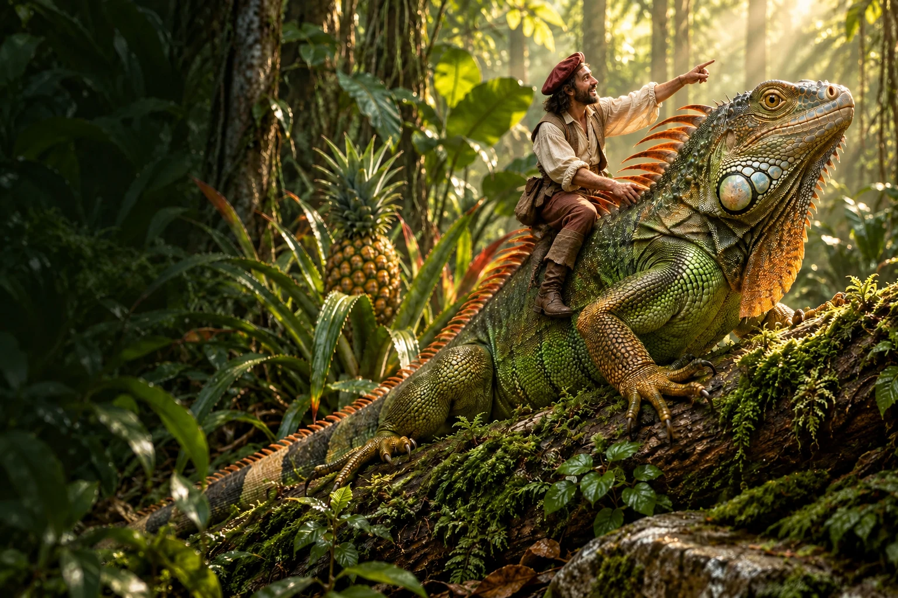
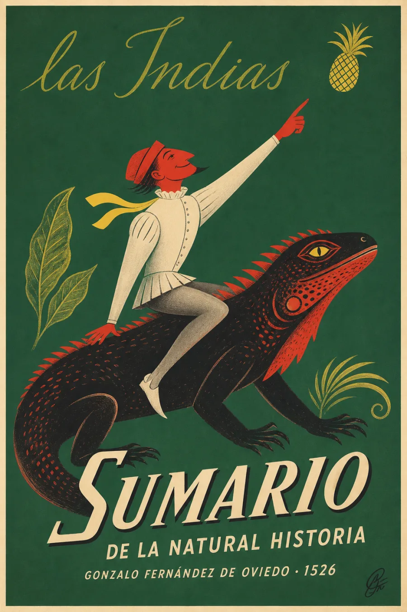

Audiolibros · Segunda Ola
Gonzalo Fernández de Oviedo · Publicación: 1526
Sumariode la natural historia
de las Indias
Un mundo que desborda las palabras.
Escamas, hojas, aromas desconocidos.
La mirada intenta volverlos escritura.

Escuchar lo que una mirada intenta nombrar.
Grabación próximamente
Volumen

La naturaleza entra en la página
Publicado en Toledo en 1526, el Sumario presenta al lector europeo animales, plantas y prácticas que Oviedo conoció en América. Describir exige encontrar comparaciones: una forma recuerda a otra; un sabor se aproxima a un fruto conocido, pero nunca coincide del todo.
Entre lo que se ve y lo que se escribe queda siempre algo por descubrir.
La piña revela esa atención a los sentidos. Oviedo describe su crecimiento y cultivo, su olor y su sabor, y compara lo observado con referentes familiares. La precisión material hace del libro un testimonio de curiosidad, de experiencia y de los límites del vocabulario con que se interpreta un entorno.
Esa mirada forma parte de la empresa colonial. Los territorios y los conocimientos indígenas pasan a un relato escrito para otros lectores y otros centros de poder. El asombro y la apropiación conviven en la misma página; leer el libro exige atender a ambos.
Primera publicación: Toledo, 1526. Texto y transcripción de la edición antigua. Texto del Sumario, incluida la descripción de las piñas. El jinete sobre la iguana gigantesca recrea la fantasía de la portada; no representa un episodio de la obra ni un encuentro documentado.
La lectura
Lectura completa
Grabación próximamente. La lectura de la obra estará disponible aquí. Las grabaciones se incorporarán cuando estén preparadas.
Valoración

Excelente